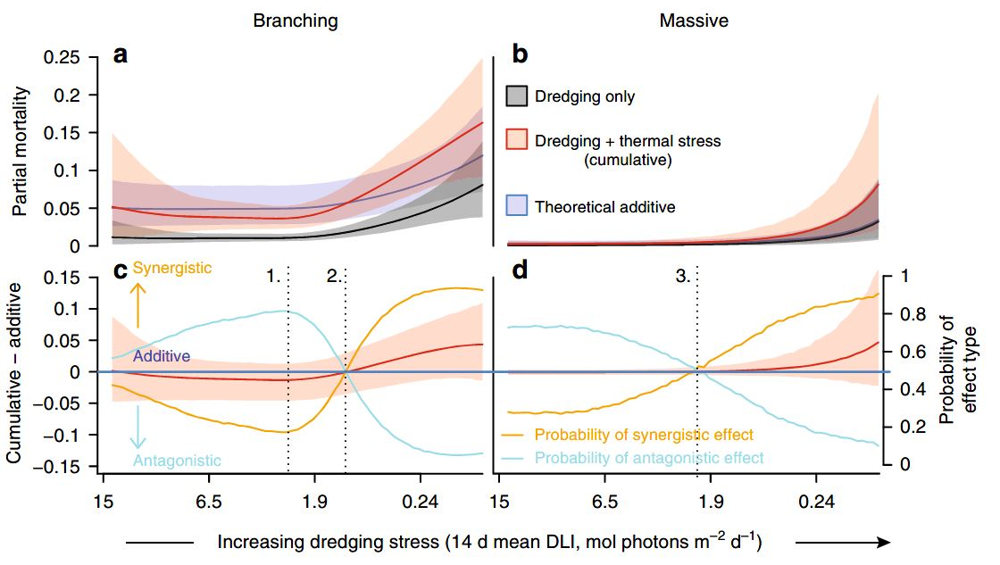
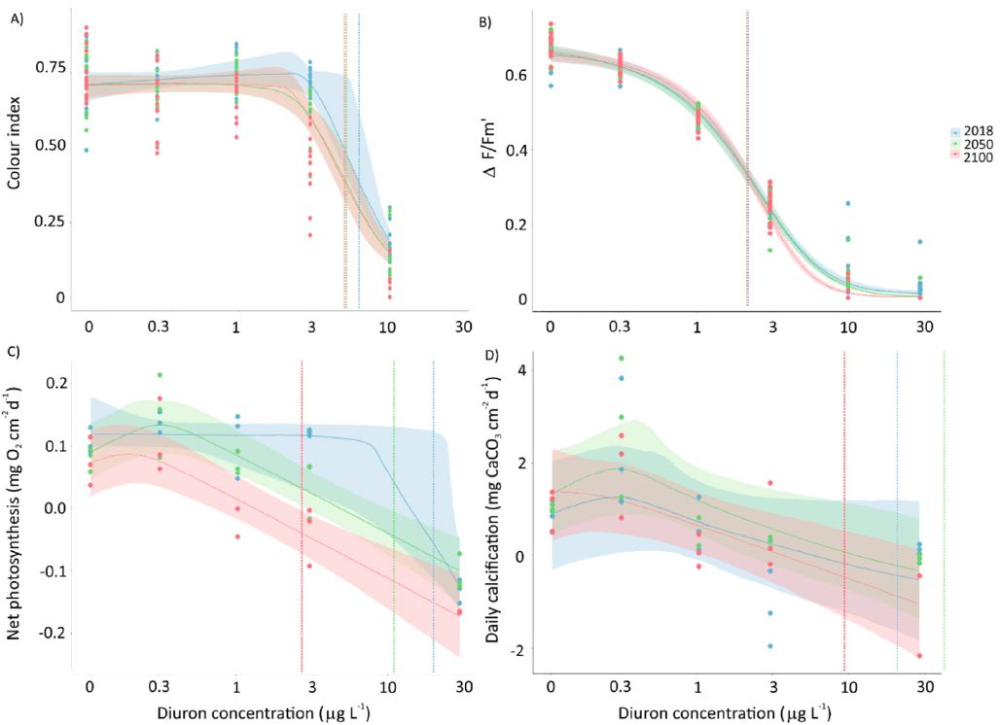
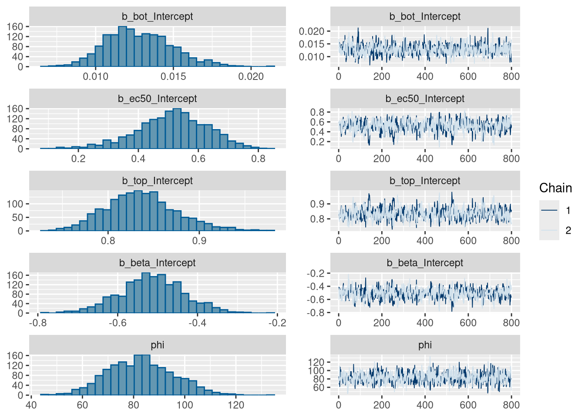
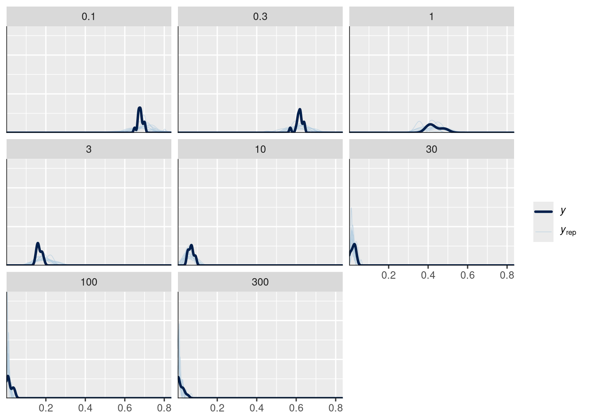
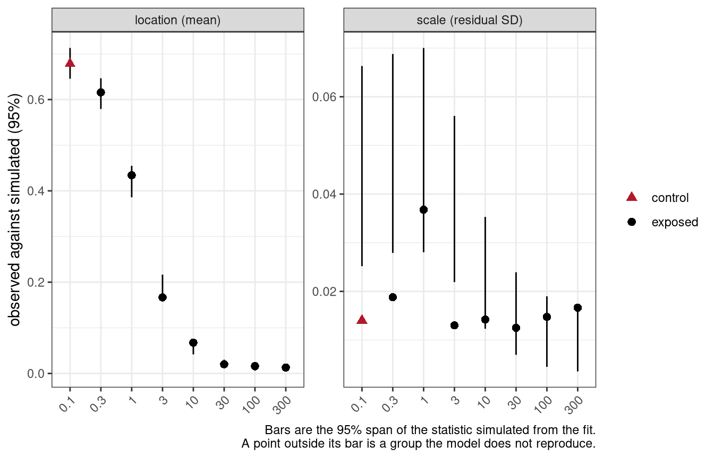
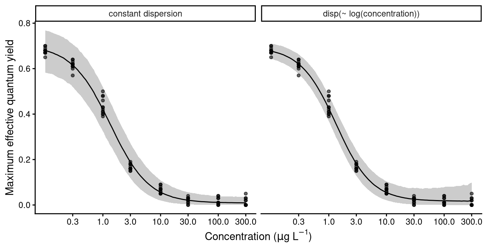

Earlier modules each covered one part of the workflow: what the model set is, how a model average is formed, how a family is chosen, how priors are built. This module runs one analysis from data to reportable estimate, in the order the steps occur. Comparing several such analyses against one another is module 8’s subject.
The workflow is:
Prepare the data and choose the family.
Fit the candidate set.
Check the sampler, and screen out the models that did not sample adequately.
Check the fit of the models that remain.
Report.
A prior check belongs between steps 2 and 3, and module 6 covers check_priors() and the construction of the defaults.


Convergence and fit
Convergence is what a Bayesian fit is usually judged on, and it is not the only thing that can be wrong. rhat(), check_chains() and check_sampling() ask whether the sampler explored the posterior, and step 3 runs them. check_fit() asks whether the fitted model reproduces the data, and step 4 runs that. A model can converge perfectly onto a description of the data that is wrong, so both are needed and neither substitutes for the other.
Module 5 sets out what check_fit() compares and why the comparison is made within concentration groups rather than once for the whole fit. The consequence that matters here is its direction. A model simulating more variability at the control than the data show gives the control posterior too much width, which places the NSEC reference lower, so the curve crosses it further along and the reported concentration is higher and less protective. A model simulating less variability returns a lower one. The direction is not known in advance and no convergence diagnostic reveals it, which is why step 4 exists and why what it finds has to be reported.
The data
The data are from Jones and Kerswell (2003) and ship with bayesnec, so nothing has to be read from a file.
The response is the maximum effective quantum yield, \(\Delta F / Fm'\), of symbiotic dinoflagellates in the tissue of the coral Seriatopora hystrix, calculated from chlorophyll fluorescence measured with a DIVING-PAM fluorometer (Jones and Kerswell 2003; Jones et al. 2003). Corals were exposed for 10 hours to eight herbicides at concentrations from 0.3 to 1000 \(\mu g L^{-1}\). Ioxynil is excluded here because it produced no adequate response at the highest concentration, leaving seven. ?herbicide documents the columns and the provenance of the response.
Figure 1: The ametryn series, on a logarithmic concentration axis.
The response is flat across the lowest concentrations and then declines. The series has 8 distinct concentrations, which is the number of points from which a curve’s shape has to be identified, and it is a constraint on which equations the design can support. Mean yield is 0.013 at the highest concentration against 0.678 at the lowest.
The scale of the response
Choosing a family is a statement about what kind of quantity the response is: the values it can take, the bounds it cannot cross, and how its variance behaves as its mean changes. Module 5 sets out the families bayesnec supports and what each assumes.
fvfm is a ratio of chlorophyll fluorescence yields. It is bounded by 0 and 1 and it is continuous, which is the Beta case rather than the binomial one: a proportion of this kind is not a count of successes out of a known number of trials, and there is no denominator to supply.
Beta estimates a dispersion parameter, phi, from the data, so there is no over-dispersion decision to take here. The family already has a free parameter for the spread and the fit will estimate it. dispersion() is defined only for poisson and binomial, the two families whose variance is fixed by the mean, which is why module 5 runs that screen and this module does not.
What has to be checked is the one thing Beta cannot accommodate, which is a value outside its support. The family is supported on the open interval (0, 1), so a value recorded as exactly 0 or 1 lies outside it.
range(ametryn$fvfm)
[1] 0.0 0.7
Ametryn does reach the lower boundary. 12 of its 96 readings are exactly zero, and they are not scattered:
Every zero is at one of the three highest concentrations, which is what a yield measurement does when the symbionts are dead. bayesnec substitutes for both bounds, a zero becoming one tenth of the smallest non-zero value and a one being reduced by an absolute 0.001, and bnec_record() reports after the fit what was altered. This series is therefore modelled through that substitution rather than as recorded, and a methods section has to say so.
The substitution is a workaround and not a model of the process. These zeros look meaningful rather than a recording floor: they are the response saturating at total effect, and they are concentrated where that is expected. Module 5 covers the hurdle and zero-inflated families, and zero_inflated_beta() is what models a response of this shape explicitly. The analysis below keeps the Beta with the substitution, because that is what the published treatment of these data used and what the comparison across seven herbicides is built on, but step 4 returns to the consequence.
fam <-Beta(link ="identity")
bnec() sets link = "identity" by default on every family, so that top, bot and nec are estimated on the scale of the response and remain directly interpretable. It is written out here for clarity. Supplying a family with a different link overrides that default, and the model then fits a non-linear curve to the transformed mean rather than to the mean, with the parameters no longer on the response scale.
The scale of the predictor
The concentrations run from 0.1 to 300, a factor of 3000, in roughly even steps on a logarithmic scale. The predictor is logged in the formula.
Settle this before fitting anything. The predictor enters the equations directly, so a transform changes the shape being fitted and not merely the axis: the same equation describes a different curve in concentration and in log(concentration). The default priors are also scaled from the predictor, so a transform rescales them. bnec() takes the concentration exactly as it is supplied and does not make the decision for you. Neither consideration settles the question in general, and which scale samples better on a given dataset is an empirical matter. Here the series was designed as a logarithmic dilution, and a logarithm is what makes its steps even.
The mechanics are four:
Write the transform inside crf(), as crf(log(concentration), ...), or apply it to the data before the call.
Add any offset to the data yourself first. For log(x), a control recorded as 0 arrives at the data check as log(0) and the fit stops.
Back-transform the estimates through xform, which nec(), ecx(), nsec(), curve_params() and autoplot() all take. Step 5 does this.
Report the scale alongside any value reported.
NoteZero on the predictor axis
The transform is evaluated before bayesnec inspects the predictor, which is why the fit stops with a report that the predictor is not finite rather than with anything naming the transform.
bayesnec does not correct a zero on the predictor axis. A concentration of zero is an ordinary control, and no response distribution constrains the values a predictor may take. Choose the offset yourself and add it to the data first, as log(x + 1) or a smaller constant suited to the series. Module 8 places the control one decade below the lowest tested concentration for exactly this reason.
Read the spacing of the design. A dilution series makes each concentration a fixed multiple of the one below it, so its steps are even on a logarithmic scale and uneven on a linear one. On a linear axis such a design crushes the low concentrations together and spreads the high ones out, so the equation spends its flexibility at the top of the range, where the response is often already flat.
The coefficient of variation of the gaps between consecutive concentrations measures how even the steps are on each axis. It is a ratio of a standard deviation to a mean, so it does not change with the units the concentrations are recorded in:
On the raw axis the gaps vary by more than their own average size, because each gap is roughly three times the one below it. On the log axis they are nearly equal. A coefficient of variation near zero is the signature of a series designed on the log scale, and the consequence of fitting such a series on a raw axis is that six of its eight concentrations fall in the lowest tenth of the predictor range. The equation then spends its flexibility over the upper range, where two points sit and the response is already flat.
NoteThe size of the difference between scales
Fitting these data on each axis in turn measures what the scale is worth here. Three equations are fitted on log(concentration) and nec4param alone on the raw concentration axis. All four use the same response and the same 96 observations, so elpd_loo is comparable between them. These fits are made for this comparison alone and are not the candidate set of step 2.
elpd <-function(fit) { brms::loo(pull_brmsfit(fit))$estimates["elpd_loo", "Estimate"]}# The largest gap between the fitted mean and the observed mean at a tested# concentration, which is the departure a plot of the curve would show.max_departure <-function(fit) { by_conc <-aggregate(cbind(observed, fitted) ~ concentration,data.frame(concentration = ametryn$concentration,observed = ametryn$fvfm,fitted =fitted(pull_brmsfit(fit))[, "Estimate"]), mean)max(abs(by_conc$observed - by_conc$fitted))}scale_fits <-list(nec4param_raw = m7_scale_raw,nec4param_log =pull_out(m7_scale_log, "nec4param"),ecx4param_log =pull_out(m7_scale_log, "ecx4param"),ecxll4_log =pull_out(m7_scale_log, "ecxll4"))data.frame(elpd_loo =round(sapply(scale_fits, elpd), 1),max_departure =round(sapply(scale_fits, max_departure), 3))
Fitting nec4param on the log axis rather than the raw axis raises elpd_loo by 23.7. The three equations fitted on the log axis span 4.3 between them. On these data the scale separates the fits by about five times what the choice of equation does.
The group means are reproduced on both axes. The largest departure of the fitted mean from the observed mean at a tested concentration is 0.041 on the raw axis and 0.032 on the log axis, on a response spanning 0.7, so the difference is not one a plot of the curve would show. elpd_loo is what reports it.
A logged predictor spanning -2.3 to 5.7 takes negative values, which excludes the equations that raise the predictor to a fractional power. Every estimate is returned on the logged scale unless xform is supplied, and step 5 returns them.
nec_data, the simulated example modules 2 to 4 use, is left on the linear scale throughout this course. It is 100 random draws rather than a designed series, and its true curve is defined as a function of linear x, so logging it would distort the generating scale rather than reveal it. The difference between that example and the dilution series here is the design rather than the package.
2. Fitting the candidate set
The whole decline set is fitted in one call, under the family chosen in step 1. model = "decline" requests the equations that describe a declining response, of which there are 14 currently in bayesnec. The remaining equations describe hormesis, a response that rises above the control before it falls, and there is no evidence of hormesis in these data.
The settings below are deliberately underbnec()’s defaults, and that is a decision made for this module rather than advice. These data are well behaved at the defaults and every equation the design supports passes the screen there, so a fit made at the defaults produces no screen failure to examine. Running short guarantees that some equations fail, which is what makes steps 3 and 5 a demonstration rather than an assertion. The settings are raised in step 3, and every estimate reported in step 5 comes from the fit made there.
m7_am_reduced <-bnec(fvfm ~crf(log(concentration), model ="decline"),data = ametryn, family = fam,iter =4000, chains =2, seed =17)save(m7_am_reduced, file ="vignettes/fits/m7_am_reduced.RData")
load("vignettes/fits/m7_am_reduced.RData")
Compare the retained draws and not iter, for the reason module 2 sets out: iter counts warmup as well as sampling and the fraction discarded is a choice each package makes. bayesnec’s defaults retain 8000 draws. The call above sets iter to 4000 with two chains, and the same warmup rule leaves 1600. That number is what the diagnostic cutoffs below are read against, so it matters here rather than only as arithmetic.
Where a fit is genuinely marginal, two arguments are the ones to reach for. iter and warmup come first when Rhat is marginal or the effective sample size is low, because a model with a poorly identified parameter may need more draws. control = list(adapt_delta = 0.99, max_treedepth = 12) comes next: raise adapt_delta when there are divergent transitions and max_treedepth when the sampler reports hitting it. Both increase runtime and neither corrects a misspecified model. Step 3 refits with all of them set and says what each one does.
The set as fitted
Two mechanisms reduce the requested set. Some equations are excluded before fitting, because they are invalid for the family or the predictor. Others are attempted and fail to fit, which happens with complex non-linear models and particularly with those that have many parameters. bnec_record() reports both, so neither has to be reconstructed from the fitted object.
rec <-bnec_record(m7_am_reduced)rec$excluded
model
1 neclin
2 ecxlin
3 ecxsigm
reason
1 decays by subtraction, so its mean is unbounded below for beta with an identity link
2 decays by subtraction, so its mean is unbounded below for beta with an identity link
3 raises the predictor to a fractional power, which is undefined for negative predictor values
requested is partitioned exactly by attempted and excluded$model. An equation that was attempted and failed to fit stays in attempted.
Two rules apply here. neclin and ecxlin decay by subtraction rather than by an exponential factor, so their fitted mean is unbounded below and cannot be held inside the (0, 1) interval a Beta mean occupies under an identity link. And the predictor is log(concentration), which is negative below a concentration of 1, so the equations that raise the predictor to a fractional power cannot be evaluated. ?models sets out these rules and the others.
failed_models() names the equations that were attempted and did not fit, and records the priors and initial values each was given, which are built inside bnec() and otherwise unrecoverable.
names(failed_models(m7_am_reduced))
[1] "ecxll5"
substitutions reports the changes check_data() made to the response because the family cannot represent a value as recorded.
rec$substitutions
variable rule n_rows from to reason
zero response shifted off zero 12 0 0.001 a beta distribution cannot represent a zero
remedy
zero zero_inflated_beta()
This is the record step 1 called for. It names the rule applied, how many rows it altered, the values before and after, and the family that would model them instead. Reporting it is what lets a reader tell an analysis of the data as measured from an analysis of the data as adjusted, and the two are not the same study.
Model weights
summary() reports the set as a whole.
summary(m7_am_reduced)
Object of class bayesmanecfit
Family: beta
Links: mu = identity
Number of posterior draws per model: 1600
Model weights (Method: pseudobma_bb_weights):
waic wi
nec3param -451.02 0.03
nec4param -456.61 0.04
ecxexp -320.58 0.00
ecx4param -465.16 0.41
ecxwb1 -443.23 0.01
ecxwb2 -461.28 0.11
ecxwb1p3 -323.21 0.00
ecxwb2p3 -446.88 0.01
ecxll4 -465.05 0.38
ecxll3 -432.45 0.00
Summary of weighted N(S)EC posterior estimates:
NB: Model set contains a combination of ECx and NEC
models, and is therefore a model averaged
combination of NEC and NSEC estimates.
Estimate Q2.5 Q97.5
N(S)EC -1.65 -2.15 -0.45
Bayesian R2 estimates:
Estimate Est.Error Q2.5 Q97.5
nec3param 0.99 0.00 0.99 0.99
nec4param 0.99 0.00 0.99 0.99
ecxexp 0.89 0.01 0.87 0.91
ecx4param 0.99 0.00 0.99 0.99
ecxwb1 0.99 0.00 0.98 0.99
ecxwb2 0.99 0.00 0.99 0.99
ecxwb1p3 0.93 0.01 0.90 0.96
ecxwb2p3 0.99 0.00 0.99 0.99
ecxll4 0.99 0.00 0.99 0.99
ecxll3 0.99 0.00 0.98 0.99
1 model(s) failed to fit: ecxll5
See ?failed_models for the priors and initial values used.
Warning in print.manecsummary(x): control observed/simulated ratio beyond 1.15 (see ?check_fit):
- nec3param
- nec4param
- ecxexp
- ecx4param
- ecxwb1
- ecxwb2
- ecxwb1p3
- ecxwb2p3
- ecxll4
- ecxll3
This is a modelling result rather than a fault; inspect with check_fit().
wi is the model weight: the share of the model-averaged prediction each candidate contributes, summing to one across the set. The weights come from PSIS-LOO, with loo_model_weights() consuming the loo objects brms computes for each fit. Where a model reports Pareto k values above 0.7 for a few observations, brms warns, and the weights remain usable while the estimates behind them are flagged as unreliable at those points. That belongs in a methods statement alongside the weights themselves.
3. Sampler diagnostics and screening
Every equation in the fitted set produced draws; the ones that did not are in failed_models(). The diagnostics here establish whether those draws describe the posterior adequately. Whether a model fits the data is a separate question, answered in step 4.
check_sampling() reports per candidate model, so the whole set is screened in one call rather than model by model.
The table gives one row per fitted model with three diagnostics: the largest Rhat, the smallest effective sample size, and the number of divergent transitions. Each is compared against a cutoff, and failed is TRUE where any of the three is missed.
The cutoffs are arguments to check_sampling() and can be changed. The Rhat default of 1.01 and the ESS default of 400 follow published recommendations (Vehtari et al. 2021); the divergence default of 10 does not. Stan’s own guidance is that any divergence means the sampler failed to explore the posterior. The default of ten is a package convention rather than a published recommendation, because these non-linear models commonly produce a small number of divergent transitions near a parameter boundary, as ?check_sampling describes.
Read min_ess rather than min_ess_ratio when deciding. The 400 is an absolute floor, below which the Rhat and ESS estimates are themselves unreliable, and it corresponds to 100 draws per chain at the four chains bnec() fits by default. Both the ESS and the divergence cutoffs are absolute counts, and the number of draws changes what each of them demands, in opposite directions. At the 1600 draws retained here a model must reach an efficiency ratio of 0.250 to clear 400, against 0.050 at the default 8000, so the ESS cutoff is harder to clear at these settings. Ten divergent transitions, on the other hand, is 0.62 per cent of the retained draws here and 0.125 per cent at the default, so at an equal divergence rate the same fit produces more of them at the defaults and that cutoff is harder to clear there. Neither setting is uniformly stricter, and a screen result is therefore a property of the settings as much as of the model. State the settings used.
Kinds of failure
The three kinds of failure are distinguished by which thresholds an equation missed, and whether divergent transitions are among them.
An equation that misses the effective sample size or Rhat threshold with no divergent transitions has been sampled from a posterior the sampler could traverse. It was not sampled for long enough to describe that posterior, and both diagnostics are themselves estimated less precisely from fewer draws. Refitting with a higher iter is what such an equation needs, and it is expected to pass once it has them, so excluding it on this evidence would be premature.
Divergent transitions are different, because they describe the posterior rather than the run. A divergence is recorded when the sampler’s trajectory through parameter space goes numerically unstable, which happens where the posterior has curvature too sharp for the step size adapted during warmup. Taking more draws samples the same surface for longer and does not smooth it. Where such an equation is also the most heavily parameterised in the set, the usual explanation is that the design does not support it.
check_sampling() reports only the equations that produced draws, so ecxll5 is added above from failed_models(): it is the equation with the most curve parameters in the set, at 5 against 4 for any equation that did fit.
The series has 8 distinct concentrations, and an equation with more curve parameters than the design can determine has a posterior that is flat in some direction. Sampling a flat direction for longer does not locate a maximum that is not there. Adjusting the settings to retain an equation in that position does not address the problem: the fit is not failing because it was run badly, but because the experiment does not contain the information the equation needs. Report it as excluded, and say why.
Where an equation’s Rhat or effective sample size sits at the threshold, which side of it the equation falls on is sensitive to the seed, and another run may place it on the other side. Any threshold applied to an estimated quantity behaves this way. It is why the thresholds have to be reported with the result, and why the screen names every threshold an equation missed rather than only the first.
Reading the chains
The table is the screen. The plot behind it shows what each diagnostic summarises, which is why it is read at least once before the table is trusted. pull_out() gives back a single fit, so any brms method applies to it, and pull_brmsfit() gives the brms model inside:
plot(pull_brmsfit(m7_am_reduced, "ecxwb1"))

Figure 2: Chains for ecxwb1, one of the equations the screen removed at these settings.
Each parameter has its marginal posterior on the left and its trace on the right. Chains that overlap, with no drift and no sustained excursion, have converged on the same distribution; chains that separate into bands, or wander, have not. These traces are well mixed, which is consistent with the diagnosis above: the equation was not sampled for long enough rather than sampled from a posterior the sampler could not traverse.
Reading plots for a set of ten does not scale, and for a set of twenty-three still less. check_chains() draws the whole set, and given a filename writes them to a PDF in the working directory rather than to the screen, which is the form to use when a set is large:
rhat() reports the first of the three diagnostics on its own, and the shape of what it returns catches people out. On a bayesmanecfit it is a list with one element per model, each holding the R-hat values and a logical failed:
Reaching for rhat(fit)$failed on a set returns NULL and silently finds nothing, which is a quiet way to conclude that every model converged.
Screening the model set
Only models that pass the sampler diagnostics are retained. The screen reads the sampler and nothing else: whether an equation reproduces the data is a separate question, and removing an equation for that silently would hide the discrepancies the fit checks exist to show.
screened_reduced <-screen_models(m7_am_reduced)
Dropping 2 of 10 candidate models that failed the sampler screen:
- nec4param: ESS 368.7
- ecxwb1: ESS 344.1
Warning:
2 (2.1%) p_waic estimates greater than 0.4. We recommend trying loo instead.
Warning:
2 (2.1%) p_waic estimates greater than 0.4. We recommend trying loo instead.
Warning:
2 (2.1%) p_waic estimates greater than 0.4. We recommend trying loo instead.
Warning:
3 (3.1%) p_waic estimates greater than 0.4. We recommend trying loo instead.
Warning:
2 (2.1%) p_waic estimates greater than 0.4. We recommend trying loo instead.
Warning:
3 (3.1%) p_waic estimates greater than 0.4. We recommend trying loo instead.
screen_models() runs the same diagnostics as check_sampling(), drops what failed, and reports which models were removed and why, one line per model naming every threshold it missed. An exclusion step that leaves no record is not reproducible, which is why the message is on by default and why quiet = TRUE should not be used in an analysis that will be reported.
If every candidate fails, screen_models() stops with an error listing the reasons rather than returning a meaningless average, which signals a return to step 2 rather than a loosened threshold. If none fails, it says so and returns the set unchanged.
amend() does the work, and it is the only route by which a model leaves a bayesmanecfit. The weights of a screened set therefore have to be read from the screened fit rather than rescaled by hand.
Raising the settings
The screen has identified the equations that did not sample adequately. For those that reported no divergent transitions, the remedy is the one step 2 deferred: fit again at bnec()’s defaults.
m7_am_fit <-bnec(fvfm ~crf(log(concentration), model ="decline"),data = ametryn, family = fam, seed =17,control =list(adapt_delta =0.99, max_treedepth =12))save(m7_am_fit, file ="vignettes/fits/m7_am_fit.RData")
Three things changed from the call in step 2, and they are the three arguments worth reaching for in this order. iter and chains return to bnec()’s defaults of 10,000 and 4, which is the remedy for a missed effective sample size. adapt_delta rises from the Stan default of 0.8 to 0.99, which makes the sampler adapt a smaller step size during warmup and is the remedy for divergent transitions. max_treedepth rises from 10 to 12, which raises the ceiling on how far the sampler may travel in one iteration and is the remedy for a warning that the tree depth was hit. Both control arguments are passed through to brms::brm() by ....
Neither control argument was needed here: no equation in either run recorded a divergent transition. They are set because a candidate set of this size on real data commonly produces a few on at least one equation, and because a run whose settings are stated is reproducible while one relying on defaults that change between versions is not. Both increase runtime, adapt_delta substantially, and neither corrects a misspecified model.
All 10 candidate models passed the sampler screen (Rhat <= 1.01, ESS >= 400, divergences <= 10).
The comparison between the two runs is the point of having made both. Every equation the screen removed at the reduced settings (nec4param, ecxwb1) passes here, on the same data and the same priors, because it was given more draws. Both had missed the effective sample size threshold with no divergent transitions, which is the first kind of failure, and more draws corrected them as that diagnosis predicted. ecxwb1 rose from an effective sample size of 344 to 2478.
No equation in either run recorded a divergent transition, so the second kind of failure does not arise on these data. Where it does, more sampling does not change the curvature the sampler could not traverse, and because the divergence cutoff is an absolute count, a longer run reports proportionally more divergences at an unchanged rate. Raising the settings makes that failure easier to see, not harder.
ecxll5 still fails to fit at all, which is the third kind and the one the parameter count anticipated. More sampling did not make it fit and would not be expected to.
The priors and initial values a failed equation was given are retained on the failed fit and are the starting point for an adjustment if one is wanted, as ?failed_models sets out.
4. Fit diagnostics
The sampler diagnostics indicate whether the sampler explored the posterior adequately. They say nothing about whether the model fits. Two checks answer different questions: pp_check() overall, and check_fit() within concentration groups.
Both are applied to the highest-weighted model of the screened set, which contributes most to the reported estimate and is therefore the one whose fit matters most. pull_best() returns it as a bayesnecfit, and returns a bayesnecfit unchanged, so a set the screen reduced to a single equation needs no separate handling.
best_fit <-pull_best(fit_screened)
Highest-weighted model is ecx4param, holding 0.405 of the weight of 10 candidate models.
Pulling out model(s): ecx4param
The weight is reported with the number of candidates it was selected from, because the two together are what say whether the selection means anything. The highest weight of a flat set of ten is little more than the equal share of 0.1, and one such equation describes the model-averaged estimate hardly at all. Read it against the weights summary() reported in step 2.
pp_check() asks whether data simulated from the fitted model resemble the data observed. Pooled over the whole dataset the comparison is weak for concentration-response data, because a model can match the pooled distribution while being wrong at every concentration, so it is grouped by the predictor here.
pp_check(best_fit, type ="dens_overlay_grouped", group ="concentration")
Using 10 posterior draws for ppc type 'dens_overlay_grouped' by default.

Figure 3: Observed and simulated response densities within each concentration.
The dark line is the observed density of the response within each concentration group and the light lines are the same quantity simulated from the fit. The response is continuous, so a density overlay is the appropriate display; a discrete response takes type = "bars_grouped" instead, which is what module 5 uses for its count example.
Location is reproduced: each observed density sits within the spread of the simulated ones, and its position follows the decline across the series. The observed curves are the more irregular of the two, because a kernel density estimated from 12 observations resolves individual values as separate modes, and that is a property of the display rather than evidence against the fit.
Width is the other thing to read, and it is where these data depart from the fit. The simulated densities are visibly the wider at the low concentrations and the narrower at the high ones. Judging that by eye from 12 observations is unreliable, which is what check_fit() puts a number on.
check_fit() tests something narrower: whether the model reproduces the observed variability and the observed level locally, within each concentration group, with the control flagged.
The control is the lowest value of the predictor, which is bayesnec’s convention throughout. Both estimators read their reference from the posterior of the fitted mean there: nsec() sets its significance reference from it, and every ECx is measured from it as well. Control variability therefore propagates into every threshold the analysis reports, not only the no-effect concentration. An experiment whose lowest treatment is not a control is being analysed on that assumption and should say so.
Identifying the control by position rather than by value keeps the convention intact under a common preparation. Analysis is often done on a log scale, and a small constant is added to the concentrations so that a zero control can be plotted and fitted. Whether the control is entered as 0, or as 0.001, or as one tenth of the lowest exposure, it remains the lowest value in the series and is therefore still the control. These data have no zero concentration, so the question does not arise and the lowest tested concentration is the reference.
For a bayesmanecfit it returns every group of every candidate model, which is more than can be read at once. Two views are useful. The first is the control row of each model, which is the row both estimators read their reference from.
cf <-check_fit(fit_screened)cf[cf$control, ]
model wi group n obs_mean sim_mean mean_ratio ppp_mean obs_sd sim_sd sd_ratio ppp_sd
1 nec3param 0.031 0.1 12 0.678 0.647 1.049 0.029 0.014 0.046 0.306 1
9 nec4param 0.033 0.1 12 0.678 0.647 1.048 0.037 0.014 0.048 0.294 1
17 ecxexp 0.000 0.1 12 0.678 0.758 0.895 0.965 0.014 0.095 0.147 1
25 ecx4param 0.405 0.1 12 0.678 0.681 0.997 0.552 0.014 0.043 0.323 1
33 ecxwb1 0.011 0.1 12 0.678 0.696 0.975 0.824 0.014 0.048 0.291 1
41 ecxwb2 0.111 0.1 12 0.678 0.659 1.030 0.126 0.014 0.045 0.312 1
49 ecxwb1p3 0.000 0.1 12 0.678 0.636 1.066 0.064 0.014 0.082 0.172 1
57 ecxwb2p3 0.018 0.1 12 0.678 0.672 1.009 0.368 0.014 0.044 0.317 1
65 ecxll4 0.390 0.1 12 0.678 0.680 0.998 0.531 0.014 0.044 0.322 1
73 ecxll3 0.000 0.1 12 0.678 0.694 0.978 0.821 0.014 0.045 0.312 1
control
1 TRUE
9 TRUE
17 TRUE
25 TRUE
33 TRUE
41 TRUE
49 TRUE
57 TRUE
65 TRUE
73 TRUE
The control group is flagged. nsec() reads its reference from the
control, so this is the row most likely to move a reported
no-effect concentration. See ?check_fit.
A continuous response has genuine residual variability at every concentration, so obs_sd, sim_sd and the ratio between them are all finite and informative, and ppp_sd is not forced to 0 or 1 by construction as it can be for a binomial response near total mortality.
Read ppp_mean and ppp_sd rather than the ratios. The posterior predictive p-value is mean(sim >= obs), so a value near 0.5 says the observed statistic sits in the middle of what the model simulates and a value near 0 or 1 says it sits in a tail. ?check_fit records the case in which a model holds high weight because it fits the bulk of the curve while fitting the control badly, which is what this view is for, and it is the case these data present.
The second view is the full table for a single model, read when one candidate is in question.
cf_best <-check_fit(best_fit)cf_best
group n obs_mean sim_mean mean_ratio ppp_mean obs_sd sim_sd sd_ratio ppp_sd control
1 0.1 12 0.678 0.681 0.997 0.552 0.014 0.043 0.323 1.000 TRUE
2 0.3 12 0.616 0.615 1.001 0.480 0.019 0.046 0.406 0.999 FALSE
3 1 12 0.434 0.420 1.034 0.217 0.037 0.047 0.789 0.828 FALSE
4 3 12 0.167 0.188 0.886 0.958 0.013 0.036 0.358 1.000 FALSE
5 10 12 0.068 0.056 1.197 0.083 0.014 0.022 0.659 0.920 FALSE
6 30 12 0.020 0.021 0.974 0.556 0.013 0.013 0.975 0.530 FALSE
7 100 12 0.016 0.011 1.424 0.106 0.015 0.009 1.575 0.112 FALSE
8 300 12 0.013 0.009 1.423 0.150 0.017 0.008 2.012 0.036 FALSE
The control group is flagged. nsec() reads its reference from the
control, so this is the row most likely to move a reported
no-effect concentration. See ?check_fit.
Location is reproduced at every concentration. mean_ratio runs from 0.886 to 1.424, which looks like a large departure at the top of the series, and ppp_mean runs from 0.083 to 0.958, entirely inside the 95% span the plot below draws. The two disagree because the fitted mean at the highest concentrations is 0.009, so a ratio of 1.4 is a difference of about 0.004 on a response spanning 0.7. This is why the p-value is read rather than the ratio: a ratio of two small numbers is large before it is meaningful.
The departure is in scale, and it is systematic rather than confined to one group. obs_sd runs from 0.013 to 0.037 with no trend across the series, while sim_sd falls steadily from 0.043 at the control to 0.008 at the highest concentration, a fivefold decline over a series whose observed spread does not decline at all.
That pattern is a property of the family, and it can be checked rather than asserted. A Beta variance is \(\mu(1-\mu)/(1+\phi)\), with a single phi estimated for the whole fit, so the spread the model simulates is fixed once its fitted mean is known.
sim_sd follows \(\sqrt{\mu(1-\mu)/(1+\phi)}\) almost exactly, at a correlation of 0.9998, so the simulated spread is not a free quantity: it is whatever the fitted mean and the one phi imply.
That single phi has to serve the whole series, and here it is a compromise the two ends pull in opposite directions. At the highest concentrations the fitted mean is about 0.009, where a Beta can produce very little spread, while the observed standard deviation there is 0.0167. Accommodating that requires a small phi, and the fit settles at 105. A small phi raises the simulated spread at every concentration, including the control, where these data are among their tightest at 0.0140. The control is not fitted badly in its own right; its variability is oversimulated as a side effect of describing the far end of the curve.
Whether this arises depends on how far the response falls. A series whose mean stays well away from zero has little variation in \(\mu(1-\mu)\), so one phi suffices and the control agrees. Ametryn declines to a fitted mean of 0.009, which is where the mismatch comes from.
The zeros of step 1 are the same story seen from the other end. At the top concentrations the response is not a small number with a little scatter around it; it is a mixture of readings at exactly zero and readings still some way above it.
top <- ametryn[ametryn$concentration ==max(ametryn$concentration), ]c(zero =sum(top$fvfm ==0), above_zero =sum(top$fvfm >0))
A single Beta mean with a single dispersion cannot describe a response of that shape, and the spread it has to account for there is what pulls phi down. The substitution of step 1 keeps those readings inside the family’s support without changing what they are. Modelling them as what they are, with zero_inflated_beta() or a hurdle family, addresses the cause rather than the symptom; the dispersion sub-model addresses the symptom directly by letting the spread vary. Module 5 covers the dispersion sub-model, written as a term in the formula, which is what lets the spread vary with the predictor instead of being fixed by the mean.
plot(cf_best)

Figure 4: Observed statistics against the 95% span of what the fitted model simulates, by concentration.
The plot shows what the table does not: the magnitude and direction of the discrepancy. Each panel gives the observed statistic against the 95% span of what the model simulates, and a point outside its bar is a group the model does not reproduce. Location and scale are separate panels because they fail independently, and that is what has happened here: every point in the mean panel sits inside its bar while several in the standard deviation panel do not.
The control row is the one Convergence and fit singled out, and on these data it is the worst of the series rather than the best. The model simulates a standard deviation of 0.043 against an observed 0.014, a sd_ratio of 0.323, and a ppp_sd of 1.000, meaning that essentially every simulated draw was more variable than the data.
That has a direction, and it is the one Convergence and fit set out. nsec() reads its reference from the posterior of the control mean, and a fit simulating more variability there than the data show gives that posterior too much width. The reference is placed lower, the curve crosses it further along, and the reported no-effect concentration is higher than the data warrant, and so less protective. An analysis reporting the N(S)EC for these data should state this check and its result. The section below fits the dispersion as a sub-model and reports what changes.
A group can fall beyond the message’s criterion and inside the plot’s bar, because the two differ: the message flags a posterior predictive p-value outside [0.05, 0.95] and the bars are the 95% span, which is [0.025, 0.975]. Read the message as a prompt to look at the group rather than as a verdict.
Repairing the dispersion
The check has identified a specific fault, so it can be tested rather than left as advice. disp() writes the dispersion as a sub-model in the formula, and ~ log(concentration) lets it vary along the predictor instead of taking one value for the whole series.
m7_am_disp <-bnec(fvfm ~crf(log(concentration), model ="ecx4param") +disp(~log(concentration)),data = ametryn, family = fam, seed =17)save(m7_am_disp, file ="vignettes/fits/m7_am_disp.RData")
load("vignettes/fits/m7_am_disp.RData")
ecx4param is named directly because it is the equation pull_best() returned above, so this is the same equation on the same data with the same priors, differing only in how the spread is modelled. Read the weight before copying the name: ecx4param and ecxll4 are separated by 0.015 of the weight on these data, so the selection could change with the seed or the settings, and the equation to refit is whichever pull_best() returns in your own run.
Figure 5: check_fit() on the dispersion sub-model fit, drawn on the same axes as the constant-dispersion fit above. The scale panel is the one to compare.
The comparison to make is between this plot and the one above it, panel for panel. The mean panel was already passing and still passes. On the scale panel the number of groups falling outside their bar drops from 3 to 1 of 8, the control moves inside, and the simulated spread no longer falls away across a series whose observed spread does not. One group is still flagged, at a concentration where the fit simulates about twice the spread the data show, so the term has improved this series rather than resolved it. That is the more common outcome than a clean repair, and the diagnostic is what distinguishes the two.
The control row is repaired. sd_ratio rises from 0.323 to 0.920, where 1 is exact agreement, and ppp_sd falls from 1.000 to 0.643, and the number of groups whose spread falls outside [0.05, 0.95] drops from 4 of 8 to 1. sim_sd no longer falls away with the mean: it now runs from 0.0153 to 0.0268, against an observed 0.0125 to 0.0368.
The same difference is visible in the fitted curves, where it is the width of the prediction rather than its position that changes.
grid <-data.frame(concentration =exp(seq(log(min(ametryn$concentration)),log(max(ametryn$concentration)), length.out =100)))# The formula term is log(concentration), which brms holds as its own column, so# newdata has to supply it rather than leaving it to be derived.grid[["log(concentration)"]] <-log(grid$concentration)pp_band <-function(fit, label) { p <-predict(pull_brmsfit(fit), newdata = grid)data.frame(concentration = grid$concentration, fit = label,Estimate = p[, "Estimate"], Q2.5 = p[, "Q2.5"], Q97.5 = p[, "Q97.5"])}bands <-rbind(pp_band(best_fit, "constant dispersion"),pp_band(m7_am_disp, "disp(~ log(concentration))"))ggplot(bands, aes(x = concentration)) +geom_ribbon(aes(ymin = Q2.5, ymax = Q97.5), fill ="grey80") +geom_line(aes(y = Estimate)) +geom_point(data = ametryn, aes(y = fvfm), size =1.2, alpha =0.6) +facet_wrap(~ fit) +scale_x_continuous(transform ="log", breaks = conc_breaks) +labs(x =expression(paste("Concentration (", mu, "g ", L^-1, ")")),y ="Maximum effective quantum yield") +theme_classic()

Figure 6: The 95% posterior predictive interval for ametryn under constant dispersion and under a dispersion sub-model, with the observations.
The interval shown is the posterior predictive one, which is where a single observation is expected to fall, rather than the interval on the fitted mean. The two curves sit almost on top of one another, because the dispersion sub-model changes what the fit expects the scatter to be and not where the response goes. What changes is the band. Under constant dispersion it spans 0.185 at the control, where the observations are tightly grouped, and narrows to 0.034 at the highest concentration, where they are not. With the sub-model the two are 0.067 and 0.098, which is the order the data call for.
The reason this matters is the estimate, not the diagnostic.
The NSEC falls by about a third once the control variability is described correctly, and its credible interval narrows to less than half its width. This is the direction Convergence and fit predicted: a fit simulating too much variability at the control places the significance reference lower, the curve crosses it further along, and the estimate returned is higher than the data warrant. Correcting the dispersion returns a lower and more protective concentration.
Two cautions. The comparison above is one equation, not the model-averaged set this module reports elsewhere, and a set refitted with a dispersion sub-model would have to be screened and weighted again before its average could be quoted. And the sub-model treats the symptom: the zeros of step 1 are still being modelled through a substitution, and zero_inflated_beta() addresses that directly. Which to reach for depends on whether the zeros are a response saturating at total effect or a measurement floor, and that is a question about the assay rather than about the fit.
5. The reported estimates
summary() returns the retained equations with their weights and the model-averaged estimate.
summary(fit_screened)
Object of class bayesmanecfit
Family: beta
Links: mu = identity
Number of posterior draws per model: 8000
Model weights (Method: pseudobma_bb_weights):
waic wi
nec3param -450.73 0.03
nec4param -456.53 0.03
ecxexp -320.67 0.00
ecx4param -465.17 0.40
ecxwb1 -443.64 0.01
ecxwb2 -461.28 0.11
ecxwb1p3 -323.34 0.00
ecxwb2p3 -446.93 0.02
ecxll4 -465.08 0.39
ecxll3 -432.21 0.00
Summary of weighted N(S)EC posterior estimates:
NB: Model set contains a combination of ECx and NEC
models, and is therefore a model averaged
combination of NEC and NSEC estimates.
Estimate Q2.5 Q97.5
N(S)EC -1.66 -2.15 -0.45
Bayesian R2 estimates:
Estimate Est.Error Q2.5 Q97.5
nec3param 0.99 0.00 0.99 0.99
nec4param 0.99 0.00 0.99 0.99
ecxexp 0.89 0.01 0.87 0.91
ecx4param 0.99 0.00 0.99 0.99
ecxwb1 0.99 0.00 0.98 0.99
ecxwb2 0.99 0.00 0.99 0.99
ecxwb1p3 0.94 0.01 0.90 0.96
ecxwb2p3 0.99 0.00 0.99 0.99
ecxll4 0.99 0.00 0.99 0.99
ecxll3 0.99 0.00 0.98 0.99
1 model(s) failed to fit: ecxll5
See ?failed_models for the priors and initial values used.
Warning in print.manecsummary(x): control observed/simulated ratio beyond 1.15 (see ?check_fit):
- nec3param
- nec4param
- ecxexp
- ecx4param
- ecxwb1
- ecxwb2
- ecxwb1p3
- ecxwb2p3
- ecxll4
- ecxll3
This is a modelling result rather than a fault; inspect with check_fit().
The set mixes threshold and smooth equations, so that estimate is a mixture of NEC and NSEC draws, which is the N(S)EC module 3 defined, and it should not be reported as a NEC.
The scale an estimate is on
The predictor was logged in the formula, so the threshold is returned on that scale. nec(), nsec() and ecx() all take an xform argument to put it back on the measured one.
This bayesmanecfit contains smooth (ecx) models, which have no threshold parameter, so the returned estimate is a weighted mixture of NEC and NSEC draws -- the model-averaged N(S)EC rather than a NEC. See ?nec and summary(), which labels it.
This bayesmanecfit contains smooth (ecx) models, which have no threshold parameter, so the returned estimate is a weighted mixture of NEC and NSEC draws -- the model-averaged N(S)EC rather than a NEC. See ?nec and summary(), which labels it.
Only the second row is on the measured scale. The first is its natural logarithm, and the two are easy to confuse, because a logged value can land in the same numeric range as a concentration: the median of the first row would pass unremarked in a series running from 0.1 to 300. Reporting a logged value as a concentration understates the threshold by a factor of 2.7 for every unit on the logged scale. Where the logarithm is negative the value is not a concentration at all, which is the one case in which the error announces itself. A reported value has to state the scale it is on.
The parameters of the curve
summary() does not report the parameters of the curve itself. curve_params() returns them, one row per parameter per equation, with the model weight beside each row.
Table 1: Fitted curve parameters for ametryn, with the weight of the equation each came from.
curve_params(fit_screened, xform = exp)
model wi dpar link parameter Estimate Q2.5 Q97.5
1 ecx4param 4.045286e-01 mu identity top 0.702418710 0.674138442 0.736174536
2 ecx4param 4.045286e-01 mu identity bot 0.008761723 0.005553341 0.012568311
3 ecx4param 4.045286e-01 mu identity beta 0.261366565 0.153316838 0.365460922
4 ecx4param 4.045286e-01 mu identity ec50 1.337311266 1.163220699 1.513116220
5 ecxll4 3.899852e-01 mu identity top 0.702000230 0.672554967 0.735327113
6 ecxll4 3.899852e-01 mu identity bot 0.008790868 0.005697632 0.012679248
7 ecxll4 3.899852e-01 mu identity beta 0.262090585 0.154275866 0.372810012
8 ecxll4 3.899852e-01 mu identity ec50 1.339230259 1.159611470 1.526763544
9 ecxwb2 1.112820e-01 mu identity top 0.657854360 0.636478659 0.682560536
10 ecxwb2 1.112820e-01 mu identity bot 0.007191189 0.003905152 0.011235785
11 ecxwb2 1.112820e-01 mu identity beta 0.074362329 -0.030719253 0.182865130
12 ecxwb2 1.112820e-01 mu identity ec50 1.005852015 0.871755416 1.138519642
13 nec4param 3.332410e-02 mu identity top 0.646805085 0.626884500 0.665868476
14 nec4param 3.332410e-02 mu identity bot 0.005907978 0.002376920 0.010263067
15 nec4param 3.332410e-02 mu identity beta -0.101325465 -0.198758267 -0.006275442
16 nec4param 3.332410e-02 mu identity nec 0.645606628 0.575975660 0.710283022
17 nec3param 3.092929e-02 mu identity top 0.646451145 0.626844068 0.665894646
18 nec3param 3.092929e-02 mu identity beta -0.214945630 -0.287047823 -0.148540038
19 nec3param 3.092929e-02 mu identity nec 0.600078995 0.536351670 0.661889998
20 ecxwb2p3 1.841562e-02 mu identity top 0.672540325 0.648385353 0.697473525
21 ecxwb2p3 1.841562e-02 mu identity beta -0.089243647 -0.163442483 -0.018039647
22 ecxwb2p3 1.841562e-02 mu identity ec50 0.905087120 0.783060508 1.030881627
23 ecxwb1 1.147356e-02 mu identity top 0.836236715 0.765885206 0.918666823
24 ecxwb1 1.147356e-02 mu identity bot 0.012595990 0.009147499 0.017023623
25 ecxwb1 1.147356e-02 mu identity beta -0.518431380 -0.666192662 -0.359220474
26 ecxwb1 1.147356e-02 mu identity ec50 1.672126183 1.312413478 2.063670595
27 ecxll3 6.163059e-05 mu identity top 0.753612910 0.717487398 0.795905340
28 ecxll3 6.163059e-05 mu identity beta 0.017861558 -0.068006685 0.096338734
29 ecxll3 6.163059e-05 mu identity ec50 1.123521220 0.930449888 1.324621561
30 ecxexp 3.008072e-26 mu identity top 0.283994665 0.262861015 0.306705757
31 ecxexp 3.008072e-26 mu identity beta -0.855636670 -0.943490664 -0.781078996
32 ecxwb1p3 1.402122e-27 mu identity top 0.977138305 0.928268566 0.996302904
33 ecxwb1p3 1.402122e-27 mu identity beta -1.082326000 -1.178475355 -1.003559278
34 ecxwb1p3 1.402122e-27 mu identity ec50 1.244570232 1.024789114 1.568024090
Nothing is averaged across the rows, for the reason module 4 gives: the equations of a set do not share a parameter list, so an average would be taken over a different subset of the set for each parameter. Read each row against the weight beside it. xform reaches nec and ec50 and no other parameter, because those two are on the scale of the predictor while top, bot and beta are levels of the response or shape parameters.
Effect concentrations and censoring
The other commonly required endpoint is an ECx, read from the same screened set.
Both are model-averaged over the screened set. Every ECx and NSEC is measured from the control, which is the predicted mean at the lowest concentration in the series, taken per posterior draw. type sets what the decline is measured against: "absolute", the default, takes it against 0, and "range" takes it against the lowest response the curve predicts. The two answer different questions and give different numbers, so the value used has to be stated. ?ecx sets out all four values and what each measures against.
A target the curve never reaches within the tested range returns NA for the affected draws, with a warning naming how many. That is a reportable outcome rather than a failure: it says the design did not reach the effect size asked for. An ECx summarised over the remaining draws is a censored estimate and has to be reported as one, naming how many draws were excluded and that the value is bounded below by the highest concentration tested. Reported without that label it reads as an ordinary estimate and understates the true value.
The estimate in a guideline derivation
This is the kind of estimate that enters a guideline derivation. In Australia that is the Australian and New Zealand Water Quality Guidelines (ANZG 2018). The NEC has been the established preference for some time (Warne et al. 2015; Warne et al. 2018), and the 2025 revision of the derivation method (Warne et al. 2025) places the NSEC alongside it: the two are now the most preferred statistical estimates, with an ECx at x of 10 or less in the tier below them.
Because the NSEC sits in the preferred tier, the condition attached to it applies, and an NSEC whose measured effect size exceeds 20% should probably not be used to derive a guideline value. Module 3 covers the ECNSEC, which is the quantity that measures it, and an analysis reporting an N(S)EC for guideline use should report that alongside.
Reporting the analysis
The estimates above are the output. What follows is what has to accompany them, because almost every number in this module is a property of a decision as much as of the data.
State the data as analysed: the response, the bounds of its distribution, and any value altered to bring it inside the family’s support. bnec_record() reports the last of these in its substitutions element.
State the family and how it was chosen. Here a continuous response bounded by 0 and 1 gives the Beta family, with the boundary check of step 1 as the evidence. For a count out of a total, report the dispersion screen of module 5 and the probability it returned.
State the candidate set as fitted: the set requested, the equations excluded before fitting and why, and any equation that failed to fit at all. bnec_record() returns the first three and failed_models() the last.
State the sampler settings: the number of retained draws rather than iter alone, because two of the three diagnostic cutoffs are absolute counts read against them, and any control values used, adapt_delta and max_treedepth among them. Both are Stan defaults unless set, and a fit that needed them raised is a different fit from one that did not.
State the diagnostic thresholds, all three of them. They are choices, they determine what was excluded, and check_sampling() allows each to be changed.
State which equations were excluded and why, naming the threshold each failed, and distinguishing an equation that would pass with more draws from one the design cannot support. Step 3 separated the three kinds.
State the fit checks and what they showed, not only the sampler diagnostics. check_fit() reports whether the model reproduces the observed variability within each concentration, and the control row is the one both nsec() and ecx() read their reference from. Where the check shows a discrepancy, state its direction, because that determines whether the reported estimate is conservative or not. On the ametryn series above the fit oversimulates variability at the control, which makes the N(S)EC less protective rather than more.
State the estimate settings: sig_val, which sets the NSEC reference and defaults to 0.01; type, which sets what an ECx is measured against and defaults to "absolute"; resolution, the number of grid points a crossing is interpolated on, which defaults to 200; and any xform used to return an estimate to the measured scale.
State the estimates with their intervals and the weights of the retained equations, and the parameters of the fitted curve that the estimates were read from, which curve_params() returns.
Jones, R J, and A P Kerswell. 2003. “Phytotoxicity of Photosystem II (PSII) Herbicides to Coral.”Marine Ecology Progress Series 261: 149–59. https://doi.org/10.3354/meps261149.
Jones, Ross J, Jochen Muller, David Haynes, and Ulrich Schreiber. 2003. “Effects of Herbicides Diuron and Atrazine on Corals of the Great Barrier Reef, Australia.”Marine Ecology Progress Series 251: 153–67.
Vehtari, Aki, Andrew Gelman, Daniel Simpson, Bob Carpenter, and Paul-Christian Bürkner. 2021. “Rank-Normalization, Folding, and Localization: An Improved \(\widehat{R}\) for Assessing Convergence of MCMC (with Discussion).”Bayesian Analysis 16 (2): 667–718. https://doi.org/10.1214/20-BA1221.
Warne, M, GE Batley, RA van Dam, et al. 2018. “Revised Method for Deriving Australian and New Zealand Water Quality Guideline Values for Toxicants – Update of 2015 Version.” Journal Article. Prepared for the Revision of the Australian and New Zealand Guidelines for Fresh and Marine Water Quality. Australian and New Zealand Governments and Australian State and Territory Governments, Canberra, 48 Pp.
Warne, Michael St J., Graeme E. Batley, Rick A. van Dam, et al. 2025. Method for Deriving Australian and New Zealand Water Quality Guideline Values for Protecting Aquatic Ecosystems from Toxicants — Update of 2018 Version. Australian; New Zealand Governments; Australian state; territory governments.
Warne, MStJ, G E Batley, R A van Dam, et al. 2015. Revised Method for Deriving Australian and New Zealand Water Quality Guideline Values for Toxicants. Prepared for the Council of Australian Government’s Standing Council on Environment; Water (SCEW). Department of Science, Information Technology; Innovation, Brisbane, Queensland. 43 pp.